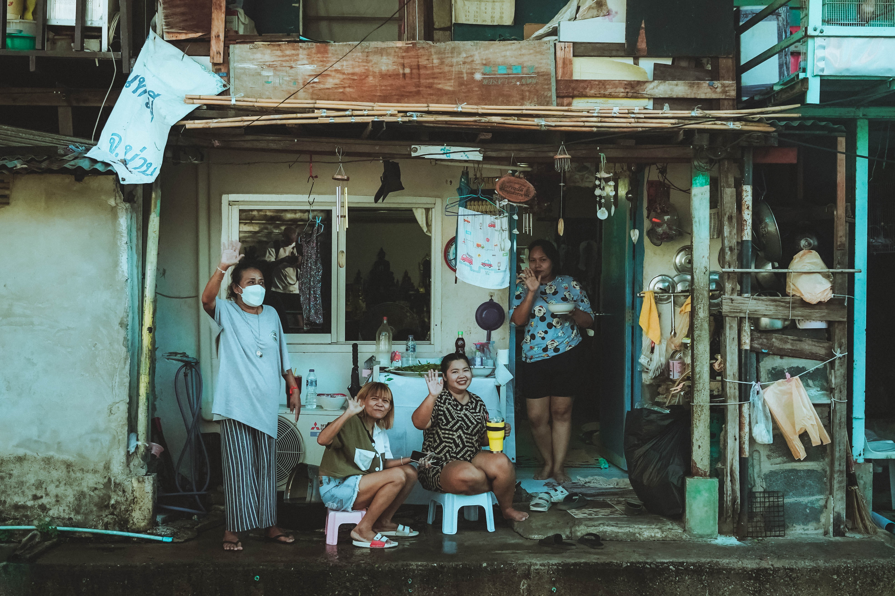
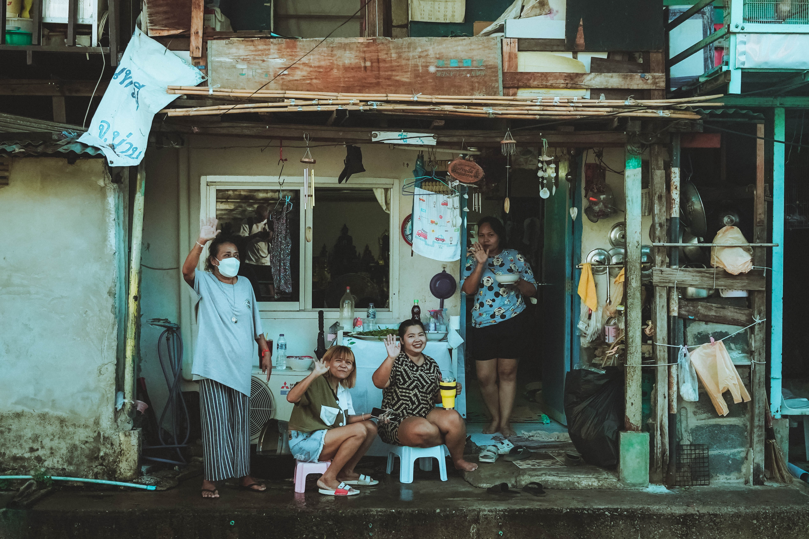

.jpg) 

.jpg)
.jpg)
Desenvolvimento Sustentável 10
Objetivo de Desenvolvimento Sustentável 10 é: "Reduzir a desigualdade dentro dos países e entre eles". Para alcançar esse objetivo foi decretado dez metas a serem cumpridas até 2030.
Os tipos de Desigualdade que existem:
- Desigualdade econômica: desigualdade entre a distribuição de renda.
- Desigualdade racial: desigualdade de oportunidades para as diferentes raças: negro, branco, amarelo, pardo.
- Desigualdade regional: disparidades entre regiões, cidades e estados.
- Desigualdade de gênero: diferenças entre homens e mulheres, homossexuais, trans e demais gêneros.
Desigualdade Racial
O objetivo do site é focar na desigualdade racial sobre a falta de oportunidades de emprego para jovens da periferia e a consequência gerada por esse motivo.

Infelizmente uma das consequências da desigualdade, foi o aumento dos jovens da periferia no tráfico, muitas famílias de comunidade normalmente só tem uma fonte de rende que é da provedora do lar, normalmente essas famílias não têm ajuda da parte paterna e o salário não é suficiente para sustentar a casa. Muitos jovens ver essa situação e tenta procurar um emprego como jovens aprendizes, adolescentes aprendizes e por morar em comunidades não consegue tão facilmente e acabam entrando para o tráfico para poder conseguir dinheiro para ajudar a família, comprar um tênis, roupas e outros objetos.
O gráfico mostra alguns motivos que mais levam os jovens a entrarem no mundo do tráfico, a pesquisa foi realizada em algumas comunidades de Vitória-ES.
propostas contra a criminalidade juvenil
Gerar empregos para os jovens
Investir em educação

Melhorar o tratamento de viciados em drogas
Bolsa Formação
Apoiar a família
Melhorar a reinserção social de menores infratores
Sobre Mim
Olá! Eu sou Beatriz Santos